<!DOCTYPE HTML PUBLIC "-//W3C//DTD HTML 4.0 Strict//EN">
<html xmlns="http://www.w3.org/1999/xhtml">
<head>
  <title>Virtual USB Analyzer - Tutorial</title>
  <link rel="stylesheet" href="style.css" type="text/css" />
  <link rel="stylesheet" href="lightbox.css" type="text/css" />
  <link rel="shortcut icon" href="favicon.ico" type="image/x-icon" />
  <script type="text/javascript" src="lightbox.js"></script>
</head>
<body>

<div class="column">
  
  <div class="h1prefix">the</div>
  <h1>Virtual USB Analyzer - Tutorial</h1>

  <div class="nav">
    <a class="nav" href="index.html">About</a>
    <a class="nav" href="download.html">Download</a>
    <a class="nav-current" href="tutorial.html#">Tutorial</a>
    <a class="nav" href="samples.html">Samples</a>
  </div>

  <div class="content">

    <h2 class="first">Capturing a log file</h2>

    <p>
    To use the Virtual USB Analyzer, you first need to capture a log
    of some USB protocol traffic. This tutorial will show you how to
    use the logging built in to VMware's virtual USB stack. You'll
    need either <a href="http://vmware.com/products/ws/">VMware
    Workstation</a>, <a href="http://vmware.com/products/fusion/">VMware
    Fusion</a>, or the
    free <a href="http://vmware.com/products/player/">VMware
    Player</a> as well as a virtual machine and USB device you want to
    capture data from.
    </p>

    <p>
    Note that you can capture the log file using any host operating
    system, and your virtual machine can be running any operating
    system that supports USB. However, you'll probably want to analyze
    the resulting logs on a Linux machine- the vusb-analyzer tool may
    be difficult to run on Windows or Mac OS. See
    the <a href="download.html">system requirements</a>.
    </p>

    <h3>The virtual machine configuration file</h3>

    <p>
    For this step, you'll need to edit your virtual machine's
    configuration file.  This is the text file with a ".vmx"
    extension, which specifies all of a virtual machine's devices,
    shared folders, debug options, and other settings. On Windows,
    you'll want to use Wordpad or any programmer's editor. On Linux
    or Mac OS, any plain text editor should work.
    </p>

    <p>
    This .vmx file is the same file you open in VMware Workstation or
    Player in order to load the virtual machine. In VMware Fusion, the
    VM may be a <i>bundle</i>, a directory which appears as a single
    file in the Finder. In this case, you'll need to open the bundle
    by right-clicking it and selecting "Show Package Contents."
    </p>

    <p class="note"><span class="icon">!</span>  You must modify the
    VM's config file only when the virtual machine is powered off or
    suspended. Any time you power off or suspend the VM, the config
    file will be modified automatically.  Be sure to reload it in your
    editor if you had the file open prior to a power or suspend
    operation.
    </p>

    <p class="note"><span class="icon">!</span>  VMware Player 3.0 for
    Windows was not packaged with the debug version of the VMX binary,
    so the debugging options below will silently have no effect. This
    only affects the Windows release. We're working on resolving this
    problem, but until then you'll have to use a different
    product. For example, Player 3.0 for Linux, Player 2.0, any
    version of Fusion, or a trial version of Workstation. Sorry for
    the inconvenience.
    </p>

    <h3>USB debug options</h3>

    <p>
    There are three configuration changes we'll make in order to use USB logging:
    </p>
    <ul>
    <li><tt>monitor = "debug"</tt><p>
        Enable debugging for this VM. This switches to a different
        version of the VMware virtual machine runtime which is compiled
        with debug checks enabled. This is the same as setting the
        "Gather debugging information" advanced option in VMware Workstation
        to "Full." Note that this option only takes effect the next time you
        power on the virtual machine.</p></li>
    <li><tt>usb.analyzer.enable = TRUE</tt><p>
        Enable USB analyzer logging in the virtual USB stack. This
        will write "USBIO:" lines to this virtual machine's <tt>vmware.log</tt> file
        on every USB packet.
        </p></li>
    <li>usb.analyzer.maxLine = &lt;number of 16-byte lines&gt;</tt><p>
        This is optional, but we'll increase the length of the payload data that we
        log for each USB packet. By default, only 80 bytes (5 hex dump lines) of data
        are logged for each packet. To see the entire contents, we'll increase this
        to 8192. This will make your log files significantly bigger, so if you don't
        need the full packet contents you can set this to a small number to decrease
        logging overhead.</p></li>
    <li>mouse.vusb.enable = FALSE</tt><p> This is also optional. By
        default, some virtual machines (Windows NT and later) will get
        a virtual USB mouse device by default. From the guest's point
        of view it looks like a normal USB device, but it is emulated
        entirely in software. This device will show up in the USB log
        output. If the extra output gets in the way, you can use this
        option to disable the virtual USB mouse. Note that with the
        virtual USB mouse disabled, mouse functionality in the VM may
        be reduced.</p>
        <p>Also note that this option only tells the virtual USB
        subsystem when to attach a new virtual mouse. If the mouse
        is already attached, you'll need to remove the corresponding
        "usb:" lines. See the example below.</p>
    </ul>

    <p class="note"><span class="icon">!</span>
    These logging options can have a significant impact on the performance of your VM,
    and they generate large log files that can fill your disk. Remember to suspend or
    power off your VM and remove the debug options when you're done.
    </p>

    <p>
    So, to enable debugging, enable the USB analyzer, and set the line
    length, we'll add these three lines to the VMX file. Note that the
    VMX file must not contain duplicate values for a single key. Make
    sure these config options don't already exist before adding them,
    or your VM will fail to start.
    </p>

<pre>monitor = "debug"
usb.analyzer.enable = TRUE
usb.analyzer.maxLine = 8192
mouse.vusb.enable = FALSE
</pre>

    <h3>USB logging output</h3>

    <p>
     When you power on or resume this VM, you should start to see
    USBIO log lines in <tt>vmware.log</tt> for each USB packet that
    traverses the virtual USB stack. On most Windows VMs, you will
    immediately see some USBIO log lines for the two virtual
    peripherals that automatically attach to every VM: The virtual hub
    and virtual mouse. (If you did not elect to disable the virtual
    mouse, that is.)
    <p>

    <p>
    Some example USBIO log entries:
    </p>
<pre>USBIO: GetDescriptor(string, 1, langId=0x0409)
USBIO: Down dev=2 endpt=0 datalen=255 numPackets=0 status=800 0
USBIO:  000: 80 06 01 03 09 04 ff 00                         ........        
USBIO: Up dev=2 endpt=0 datalen=46 numPackets=0 status=0 0
USBIO:  000: 80 06 01 03 09 04 ff 00                         ........        
USBIO:  000: 2e 03 56 00 4d 00 77 00 61 00 72 00 65 00 20 00 ..V.M.w.a.r.e. .
USBIO:  010: 56 00 69 00 72 00 74 00 75 00 61 00 6c 00 20 00 V.i.r.t.u.a.l. .
USBIO:  020: 55 00 53 00 42 00 20 00 48 00 75 00 62 00       U.S.B. .H.u.b.  
</pre>

    <p>
    They are designed to be somewhat human readable even without the
    Virtual USB Analyzer tool. Some very basic Chapter 9 protocol
    decoding is performed in the virtual USB stack, and packet data is
    dumped in hex and in ASCII. The "Down" lines indicate a request
    that is on its way from the guest OS to the (virtual) hardware,
    and an "Up" is a response or completion which is returning from
    the hardware back to the guest OS.
    </p>

    <h3>An example logging session</h3>

    <p>
    For this tutorial, we'll capture the USB bus traffic that results
    after plugging in a USB flash drive. We'll capture logs from both
    Windows and Linux virtual machines, so we can compare the
    two. We'd like to know what, if anything, is different about how
    Windows and Linux access USB storage devices.
    </p>

    <p>
    To capture the logs, we'll take the following steps:
    </p>

    <ol>
    <li>With the Windows VM suspended, add the new debug options to
    its <tt>.vmx</tt> config file:
<pre>monitor = "debug"
usb.analyzer.enable = TRUE
usb.analyzer.maxLine = 8192
mouse.vusb.enable = FALSE
</pre><p>And <b>remove</b> the existing virtual USB device definitions:
</p><pre>
usb:0.present = "TRUE"
usb:1.present = "TRUE"
usb:1.deviceType = "hub"
usb:0.deviceType = "mouse"</pre>
</li>
    <li>Power on or resume the virtual machine.</li>
    <li>There should be a new <tt>vmware.log</tt> file in the virtual
        machine's directory. It shouldn't contain any <tt>USBIO</tt> lines
        yet.</li>
    <li>Now we'll start our test. We'll connect a USB disk to the Windows VM,
        let Windows mount it, copy a file off of it, then disconnect the disk.</li>
    <li>Suspend the virtual machine.</li>
    <li>To reduce the size of the log, we can filter out only the
        USBIO log entries and compress them. This is optional,
        vusb-analyzer can also be run directly on the vmware.log file.
        <pre>grep USBIO vmware.log | gzip > windows-storage-read.log.gz</pre>
        </li>
    <li>Edit the VMX file again, and remove the four lines we added in
        step 1. There's no need to re-add the <tt>usb:*</tt> lines, as
        they will be added automatically as necessary.</li>
    <li>Now we'll repeat steps 1 through 7 with a Linux VM, for comparison later.</li>
    </ol>

    <h2>Viewing a single log file</h2>

    <p>
    This tutorial will assume you have a log file to view. If you
    skipped the section above, download one of
    the <a href="samples.html">sample log files</a>.
    </p>

    <p>
    The vusb-analyzer tool's command line usage is pretty straightforward:
    </p>
<pre>micah@carrot:~/download$ <b>tar zxf vusb-analyzer-1.0.tar.gz</b>
micah@carrot:~/download$ <b>cd vusb-analyzer-1.0/</b>
micah@carrot:~/download/vusb-analyzer-1.0$ <b>./vusb-analyzer</b>
Warning: psyco not found, install it for a nice speed boost.
usage: ./vusb-analyzer [-t] vmx.log [vmx.log]

PyGTK frontend for the virtual USB analyzer
Micah Dowty <micah@vmware.com>

  -t  Tail mode, start from the end of a growing log file.

The provided log file may be a VMware VMX log file,
or an exported XML file from Ellisys Visual USB.
Logs may be appended to while this program is running.

For best results with Ellisys logs, enable 'Expand
transactions packets' but not 'Expand consecutive
elements' while exporting.

Two log files can be specified, in order to invoke
diff mode.
</pre>

  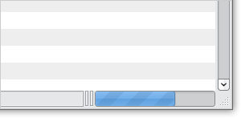

  <p>
  So, let's start by giving it a single log file. The UI should appear
  immediately along with the first section of the log file. If you're
  viewing a large log file, it will continue to load in the background.
  The progress bar at the bottom-right corner of the window indicates
  loading progress. It disappears when the file is fully loaded.
  </p>

  <pre>micah@carrot:~/download/vusb-analyzer-1.0$ <b>./vusb-analyzer ../linux-storage-read.log.gz</b>
Warning: psyco not found, install it for a nice speed boost.
Loaded decoder module 'Cypress'
Loaded decoder module 'Bluetooth'
Loaded decoder module 'Storage'
Installing decoder VUsbTools.Decoders.Storage.CommandDecoder
Installing decoder VUsbTools.Decoders.Storage.StatusDecoder
</pre>

  <a href="screenshots/tutorial-lsr-800.png" rel="lightbox">
    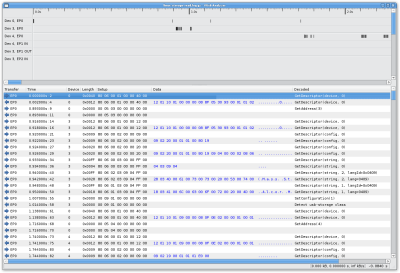
  </a>

  <p>
  This is the main vusb-analyzer window. From top to bottom, it has
  three interesting regions:
  </p>
  <ul>
  <li><b>The timing diagram.</b> Each USB endpoint is allocated a row on
     this chart. The vertical stacking is arbitrary. The horizontal axis
     is time since the first log entry, in seconds.
     <ul>
       <li>Each box represents one USB transaction. The left edge is
       when the transaction started, the right edge marks its
       completion.</li>
       <li>Transactions are color-coded by size: Zero-byte transfers
       are gray, small transfers are blue, large transfers are
       yellow.</li>
       <li>Errors are marked by a red stripe at the end of a transaction box.</li>
       <li>Left-click or left-drag to select transactions</li>
       <li>Middle-click to zoom in</li>
       <li>Right-click to zoom out</li>
     </ul>
     </li>
  <li><b>The transaction list.</b> The beginning and end of every USB
  transaction appears here, in chronological order.
     <ul>
       <li>Left-click to select one transaction.</li>
       <li>Use the keyboard arrows and page-up/page-down to quickly
       move through large logs.</li>
       <li>Use ctrl-click and shift-click to select multiple transactions.</li>
       <li>Right-click for filter and export options.</li>
       <li>Double-click to open the detail window, which gives a full hex
       dump of the current transaction as well as decoded protocol information. </li>
     </ul>
     </li>
  <li><b>The status bar.</b> In the right corner, this displays the current
  time at the cursor. The box to the left displays metrics for the
  hilighted group of transactions.</li>
  </ul>

  <h2>Making sense of URBs</h2>

  <p>
  The <i>transactions</i> we've been talking about so far are also
  known as USB Request Blocks (URBs). This is the typical unit of communication
  used by USB drivers. URBs are distinct from the actual <i>packets</i> that appear
  on the physical USB wire.
  </p>

  <p>
  When a USB driver submits a URB to the operating system's USB stack,
  the USB stack converts this URB into a set of lower-level primitives
  (Transfer Descriptors) and sends it off to the USB host
  controller. The TDs tell the host controller to poll the device. The
  host controller continues to poll the device, in hardware, until the
  transfer is complete. When the last TD finishes, the host controller
  fires an interrupt, and the operating system completes the URB.
  </p>

  <p>
  Since the Virtual USB analyzer only sees URBs, not wire-level
  packets or TDs, it is a higher level analyzer than a typical
  hardware analyzer like those made by Ellisys or LeCroy. It is more
  similar to USB Snoopy, which captures URBs as they traverse the
  Windows driver stack.
  </p>

  <p class="note"><span class="icon">!</span>  When capturing USB logs
  with VMware, you won't always get URBs that look exactly like the
  ones originally submitted by the driver running in your VM. VMware
  does not modify the USB stack in your VM, it just emulates the
  industry-standard UHCI and EHCI controller chips. The URBs you see
  in the log were re-assembled from TDs that the guest OS submitted to
  the USB controller.  They should be semantically identical to the
  original URBs, but you may see that URBs have been split or
  recombined.
  </p>

  <p>
    This is how a single URB looks in the transaction list:
  </p>

  <a href="screenshots/tutorial-xfer.png" rel="lightbox">
    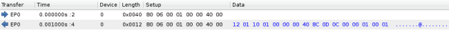
  </a>

  <p>
   Each URB always has two entries in the list: One showing when the
   driver submitted it, and one showing when it completed.  Most URBs
   complete pretty quickly, and their duration is a good measure of
   the latency we're experiencing from the device and the host
   machine's USB stack. This isn't always the case, though, as we'll
   see later.
  </p>

  <p>
    From left to right, the columns in the transaction above:
  </p>
  <ul>
    <li><b>Transfer direction and endpoint.</b> The right arrow
    indicates a URB submission, and a left arrow indicates
    completion. The text in this column indicates the endpoint and
    endpoint direction, if applicable.</li>
    <li><b>Time.</b> This column records the wallclock time, measured
    in seconds since the first log event. The number after the colon
    is a line number in the log file, in case you want to cross-reference
    this list with the raw log data.</li>
    <li><b>Device Address.</b> This is the USB device address, as
    assigned by the operating system running within the VM. New
    devices always start out with address zero, then they are assigned
    a permanent address with the <tt>SET_ADDRESS</tt> control request.</li>
    <li><b>Length.</b> The transfer length, in bytes, not including
    SETUP data. When the URB is submitted, this is the size requested
    by the driver: The number of bytes to transfer, or the maximum
    number of bytes we want to receive. When the URB is completed, it
    indicates the actual amount of data we transferred. In this
    example, the driver is asking to read at most 0x40 bytes, and it
    gets back 0x12 bytes of data.</li>
    <li><b>Setup.</b> For control requests, this column displays the
    raw contents of the <tt>SETUP</tt> packet, in hexadecimal.</li>
    <li><b>Data.</b> This is a hex dump of at most the first 16 bytes
    of data. To see a full dump, double-click the transaction list.
    Data will appear in the table when an output transfer is submitted,
    and when an input transfer is completed.</li>
  </ul>

  <p>
   The rightmost column contains a summary of the decoded high-level
   protocol information in that transfer.  Here's another example: the
   completion of a <tt>GET_DESCRIPTOR</tt> request for reading the
   configuration descriptor on the VMware Virtual Hub device.
  </p>

  <a href="screenshots/tutorial-getdesc.png" rel="lightbox">
    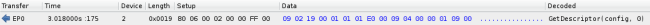
  </a>

  <p>
    Double-clicking this line reveals the detail window:
  </p>

  <a href="screenshots/tutorial-detail.png" rel="lightbox">
    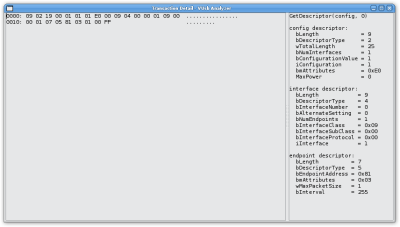
  </a>

  <p>
    On the left
    side you'll find a full hex dump of the transfer data, on the
    right is the annotation provided by a protocol decoder plugin. In
    this case, it's disassembling a few of the standard USB Chapter 9
    descriptors. You can copy and paste text from either side of the
    window.
  </p>

  <p>
    Before you try copying and pasting hex dumps from this window, though,
    take a look at the <i>Exporting data</i> section below.
  </p>

  <h2>Using the timing diagram</h2>

  <p>
    The timing diagram is a graphical visualization of the time,
    quantity, and size of URBs. The horizontal axis is time. The
    vertical axis is arbitrary, but transactions are first grouped by
    device and endpoint, then stacked tightly for the best space
    utilization.
  </p>

  <p>
    Let's take a closer look at the beginning of the Linux USB storage
    log we captured above. If you skipped the <i>capturing a log
    file</i> section above, download one of
    the <a href="samples.html">sample log files</a>. The log file
    we're looking at here
    is <a href="samples/linux-storage-read.log.gz"><tt>linux-storage-read</tt></a>.
  </p>

  <a href="screenshots/tutorial-enum.png" rel="lightbox">
    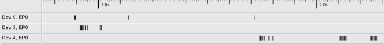
  </a>

  <p>
    This is a typical diagram showing an enumeration sequence. In the
    "Dev 0, EP0" column, you can see the <tt>SET_ADDRESS</tt> URBs
    which give two other devices addresses 3 and 4. Immediately
    afterward, many small control requests are sent as the device's
    driver loads and initializes. All of these packets are very quick,
    and have very little data content.
  </p>

  <p>
    Now we'll scroll right, just past 7 seconds. Enumeration is
    finished, and we're starting to see some SCSI traffic:
  </p>

  <p>
    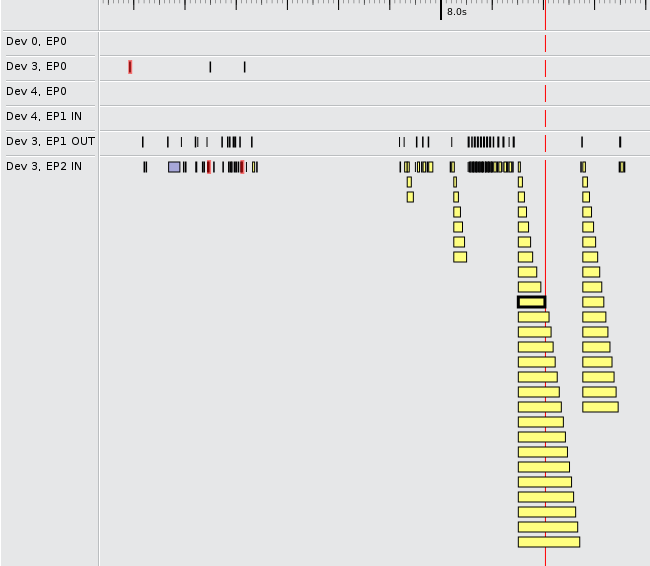
  </p>

  </p>
    On the left, we see a handful of small packets on EP1 OUT and EP2
    IN. These are SCSI INQUIRY, TEST_UNIT_READY, and friends. You can
    click on any URB to see its corresponding data in the transaction
    list. Any time you select an item in the timing diagram it will be
    selected in the transaction list, and vice versa. You can even
    middle-click to zoom in on these small transfers, or left-drag to
    "scrub" over them quickly to find a particular transaction.
  </p>

  <p>
    You'll also notice a few red stripes on the graph. These are errors-
    in this case, the USB storage driver sent an unsupported command, so
    the device reported a stall. The red stripe on EP0 is an unsupported
    class-specific request, which also reported a stall.
  </p>

  <p>
    On the right, you can see some actual SCSI READ requests. The
    color coding tells us that they're larger packets, and we
    immediately notice the huge stack of URBs. What does this mean?
  </p>

  <p>
    Well, the timing diagram always places the left and right edges of
    a box according to the submission and completion timestamps of a
    URB.  If multiple URBs are pending, the timing diagram will stack
    them vertically.  The vertical stacking order is arbitrary, it
    just tries to fill space as efficiently as possible. As a general
    rule, the taller a stack is the more URBs are being run
    concurrently by the device's driver.
  </p>

  <p>
    In this case, the guest's driver is submitting a command block for
    a SCSI READ request, then it immediately submits every URB it will
    need for that request's payload data. All of these URBs start at the
    same time, but they complete sequentially as the device actually
    delivers data back to the USB controller.
  </p>

  <p>
    The vertical red line is the timing diagram cursor. It follows the
    mouse when you hover over the timing diagram, and it also jumps to
    the timestamp on any transaction you hilight in the transaction
    list.  It's a good "You are here" marker to use when navigating
    the transaction list. It also helps you visually inspect many URBs
    relative to a single point in time. At this screenshot's cursor
    position, you can see that one URB is just ending, and 16 more are
    still pending.
  </p>

  <p>
    For comparison's sake, let's load up the Windows counterpart to
    this log, to see how its USB stack differs.  If you skipped
    the <i>Capturing a log file</i> section above, you can download
    the sample <a href="samples/windows-storage-read.log.gz"><tt>windows-storage-read</tt></a>
    log.
  </p>

  <p>
    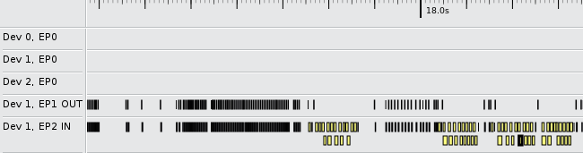
  </p>

  <p>
    The difference is pretty striking. The tightly packed group of URBs
    on the left is a flood of TEST_UNIT_READY spam. on the right, we're
    sending actual READ requests. Instead of sending out all its URBs
    at once, the Windows storage driver keeps at most two outstanding
    at any time. It starts out by sending two URBs, then the moment the
    first one finishes it sends out another.
  </p>

  <p>
    We can middle-click to zoom in and see this more clearly:
  </p>

  <p>
    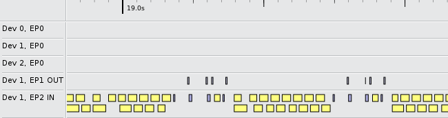
  </p>

  <p>
    Even though the stacking is arbitrary, since vusb-analyzer is
    trying to fill space efficiently it will usually tend to put a new
    transaction in the space that opened up after another transaction
    completed. This means you can often see rows emerge, in which the
    driver always submits a new URB after a previous one
    completes. This makes it possible to quickly measure the latency
    both of the device and of the virtual machine and its USB driver.
  </p>

  <h2>Side-by-side diff mode</h2>

  <p>
    If we want to compare two logs, we could open them up in two
    separate vusb-analyzer windows, and look for similarities and
    differences between them. This would be okay for small logs, but
    it can quickly get very tedious, especially if the logs are nearly
    identical. We could <tt>diff</tt> the log files themselves, but
    there is a lot of noise data in there that we'd really like to
    ignore- things like timestamps and device addresses.
  </p>

  <p>
    This diff mode was originally developed for comparing VMware's
    virtual URBs to the physial traffic that we could observe on the
    USB wire with a hardware analyzer. We would take a software
    analyzer trace and a hardware trace simultaneously, and load them
    into vusb-analyzer's diff mode as a way to debug our virtual USB stack.
  </p>

  <p>
    This mode could be useful for other cases where you're trying to
    duplicate the behaviour of another piece of software. For example,
    if you're trying to write a Linux driver by reverse engineering
    the communications between a Windows driver and a proprietary
    device, you could use diff mode to compare your driver with the
    proprietary driver.
  </p>

  <p>
    In this tutorial, we'll compare the Windows and Linux logs we
    captured above. If you skipped the <i>Capturing a log file</i>
    section, you can download the
    sample <a href="samples/windows-storage-read.log.gz"><tt>windows-storage-read</tt></a>
    and <a href="samples/linux-storage-read.log.gz"><tt>linux-storage-read</tt></a>
    logs.
  </p>

  <p>
    To use diff mode, just run vusb-analyzer with two log filenames on
    the command line:
  </p>
  <pre>micah@carrot$ <b>./vusb-analyzer ../linux-storage-read.log.gz ../windows-storage-read.log.gz</b>
Warning: psyco not found, install it for a nice speed boost.
Loaded decoder module 'Cypress'
Loaded decoder module 'Bluetooth'
Loaded decoder module 'Storage'
Loaded decoder module 'Cypress'
Loaded decoder module 'Bluetooth'
Loaded decoder module 'Storage'
Installing decoder VUsbTools.Decoders.Storage.CommandDecoder
Installing decoder VUsbTools.Decoders.Storage.StatusDecoder
Installing decoder VUsbTools.Decoders.Storage.CommandDecoder
Installing decoder VUsbTools.Decoders.Storage.StatusDecoder
Installing decoder VUsbTools.Decoders.Storage.CommandDecoder
Installing decoder VUsbTools.Decoders.Storage.StatusDecoder
</pre>

  <a href="screenshots/diff-mode-800.png" rel="lightbox">
    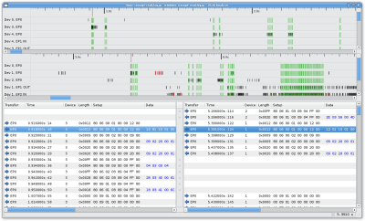
  </a>

  <p>
   The resulting window will have a lot of information. I hope you
   have a large monitor! The transaction list from each log will
   appear side-by-side, with the first log on the left and the second
   on the right. Additionally, the timing diagrams will appear
   stacked, with the first log on top and second on bottom.
  </p>

  <p>
   Most importantly, you will see diff markers: A column of line
   markers will separate the two transaction lists, and each timing
   diagram will have green striped areas.
  </p>

  <p class="note"><span class="icon">!</span>
    You may not see any diff notes immediately. It can take vusb-analyzer
    some time to load both log files into memory, and it only computes
    the differences between the two files after both are fully loaded.
  </p>

  <p>
    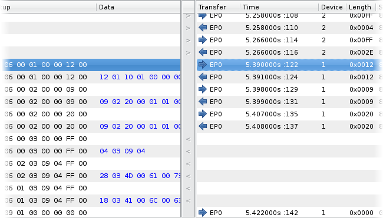
  </p>

  <p>
    A blank space in the marker column indicates that the transactions
    on the left and right side match. The "&lt;" and "&gt;" markers indicate
    that a transaction only exists on one side, and the "|" marker
    means that the transaction was modified.
  </p>

  <p>
    For any areas which match, vusb-analyzer will link your selection. When
    you click a transaction on the left side, it will hilight the matching
    transaction on the right side, and on both timing diagrams.
  </p>

  <p>
    The timing diagrams will show matching regions with a green
    band. All URBs inside that band matched with a group of URBs in
    the other log.  If you click one of these URBs, the matching URB
    will be hilighted in the other timing diagram and in both
    transaction lists.
  </p>

  <p>
    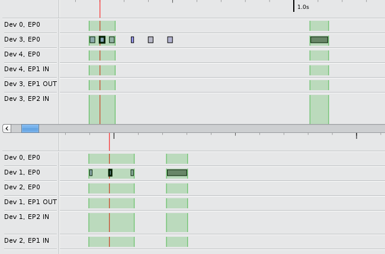
  </p>

  <p>
    This image shows a section where the first log has three extra
    URBs as compared to the bottom log, but they otherwise match
    exactly.
  </p>

  <h2>Exporting data</h2>

  <p>
    The Virtual USB Analyzer is useful for analyzing the structure of
    a USB sniffer log, but sometimes you just want to extract some
    data.  This could be blocks of data that were read or written from
    a disk, or perhaps a firmware image that a device's driver
    automatically sends on connect. The Virtual USB Analyzer has some
    tools that make it easier to select transactions and dump their
    data to disk.
  </p>

  <p>
    In this example, we'll extract audio data which was logged on its
    way to a pair of USB headphones. If you want to follow along, you
    can download the sample
    <a href="samples/windows-audio-playback.log.gz"><tt>windows-audio-playback</tt></a>
    log file.
  </p>

  <p>
    Here's an example of what audio playback looks like in this log:
  </p>

  <p>
    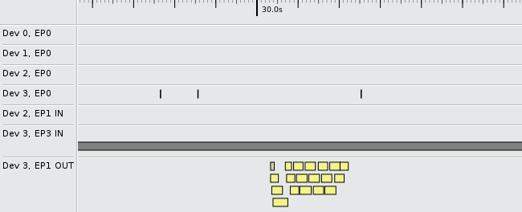
  </p>

  <p>
    The control requests on EP0 are initializing the stream, and EP1
    OUT carries the actual Isochronous packets which carry the audio
    data. EP3 IN is polling for button presses from the device's HID
    interface. This screenshot is the short sound effect that Windows
    plays after a new hardware device is attached. Later in the file
    we'll see a longer stream playing:
  </p>

  <p>
    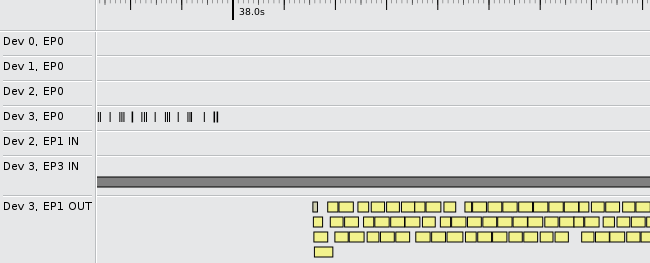
  </p>

  <p>
    Let's try to capture the long stream, ignoring the Windows sound
    effect. If you click the top-left URB in the EP1 OUT pipe, shortly
    after 38 seconds, the transaction list will hilight the
    corresponding completion event. To hilight the rest:
  </p>
  <ul>
    <li>Click the transaction once, to give it keyboard focus.</li>
    <li>Hold down Shift, to select multiple items, and start pressing
    Page Down. Your selection will grow, and the timing diagram cursor
    will move to show you where you are.</li>
    <li>Select all of the URBs you're interested in. In this case, we
    want the whole rest of the log. Another way to select all of these
    transactions is to shift-click once on the last transaction you're interested in.
    </li>
    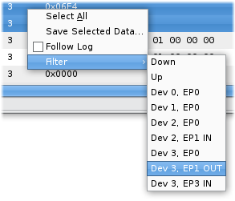
    <li>Now we can filter the selection to include only EP1 OUT. Not a
    lot is going on in this log, but in a busier log this can make
    sure you aren't grabbing unintended packets from other
    interfaces. </li>
  </ul>
  <p>
    Once you have the proper transactions hilighted, right click again
    and pick "Save Selected Data...". This writes out a raw binary
    file which contains the payload from all selected packets,
    concatenated in chronological order. We'll save this data to "audio.raw".
  </p>

  <p>
    Now we can play it. The 'play' tool included
    with <a href="http://sox.sourceforge.net/">sox</a> can handle
    headerless audio files:
  </p><pre>micah@carrot:~$ ls -l audio.raw 
-rw-r--r-- 1 micah micah 2284556 2009-01-12 12:24 audio.raw
micah@carrot:~$ play -r 44100 -c 2 -s -2 audio.raw 

Input File     : 'audio.raw'
Sample Size    : 16-bit (2 bytes)
Sample Encoding: signed (2's complement)
Channels       : 2
Sample Rate    : 44100

Time: 00:12.95 [00:00.00] of 00:00.00 (0.00%) Samples out: 571k  Clips: 0    
Done.
</pre>


  </div>
  <div class="foot"> </div>
</div>

<div class="footer-logos">
<a href="http://sourceforge.net"></a>
</div>

</body>
</html>
